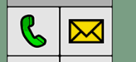

Como usar?
O OldPal é mu website preparado para que o idoso possa se conectar com familiares e amigos um dos poucos a ter o BIG LAUNCHER
O Big Launcher é uma aplicação focada no idoso, contendo mensagens, uma lista de contatos, chamadas e mais algumas funções do tipo.
Deste modo site possui botões grandes de fácil visualização
Então basta dar um clique nos botões que será direcionado para a determinada função
